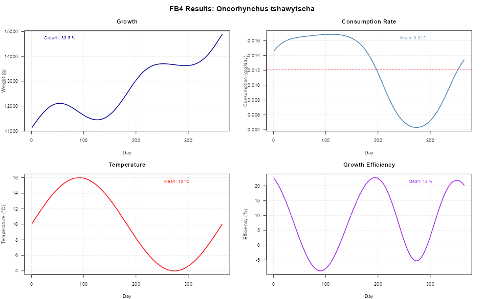

About this project
I’ve been working on fb4package, an R implementation of the Fish Bioenergetics 4.0 model developed by Deslauriers et al. (2017).
What started as a need for more flexible fish growth modeling turned into a full package that’s way more scriptable than the original Shiny app. Perfect for when you need to run batch simulations or integrate bioenergetic modeling into larger research workflows - and actually reproducible!

What it does
- Full energy budget simulations - Models daily consumption, metabolism, excretion, egestion, and somatic growth
- 105+ fish species with pre-loaded parameter sets across various life stages
- Automated parameter optimization - Throw in target weights/consumption and let it optimize
- Multi-prey diets - Because fish don’t eat just one thing! Variable daily proportions and indigestible components
- Temperature effects - Realistic seasonal physiology with environmental integration
- Actually reproducible - No more clicking through GUIs! Fully scriptable workflows
Quick example
library(fb4package)
# Load built-in species parameters
data("fish4_parameters", package = "fb4package")
chinook_params <- fish4_parameters[["Oncorhynchus tshawytscha"]]
# Create temperature data (seasonal variation)
temperature_data <- data.frame(
Day = 1:365,
Temperature = 10 + 6 * sin(2 * pi * (1:365) / 365) # 4°C ± 6°C seasonal cycle
)
# Define diet composition
diet_data <- data.frame(
Day = 1:365,
anchoveta = 0.37, # 37% anchoveta
sardina = 0.63 # 63% sardina
)
# Prey energy densities (J/g)
prey_energy_data <- data.frame(
Day = 1:365,
anchoveta = 5553,
sardina = 5000
)
# Indigestible fractions
indigestible_data <- data.frame(
Day = 1:365,
anchoveta = 0.05,
sardina = 0.05
)
# Create bioenergetic object
bio_obj <- Bioenergetic(
species_info = chinook_params$species_info,
species_params = chinook_params$life_stages$adult,
environmental_data = list(temperature = temperature_data),
diet_data = list(
proportions = diet_data,
energies = prey_energy_data,
indigestible = indigestible_data,
prey_names = c("anchoveta", "sardina")
),
simulation_settings = list(
initial_weight = 11115.358, # Initial weight (g)
duration = 365 # Simulation days
)
)
# Set predator energy density parameters
bio_obj$species_params <- set_parameter_value(bio_obj$species_params, "ED_ini", 6308.570)
bio_obj$species_params <- set_parameter_value(bio_obj$species_params, "ED_end", 6320.776)
# Run simulation with automatic fitting to target weight
results <- run_fb4(
bio_obj,
fit_to = "Weight",
fit_value = 14883.695, # Target final weight (g)
max_iterations = 25
)
# View results
print(paste("Final weight:", round(results$summary$final_weight, 2), "g"))
print(paste("Optimal p-value:", round(results$summary$p_value, 6)))
print(paste("Converged:", results$fit_info$fit_successful))Check it out Still working on it, but you can explore what’s there: 🔗 https://github.com/HansTtito/fb4package Feedback welcome! Always looking to improve it and would love to hear what works (or breaks) for you. Built this because I got tired of manual parameter tweaking - figured others might find it useful too.
Reference Deslauriers, D., Chipps, S. R., Breck, J. E., Rice, J. A., & Madenjian, C. P. (2017). Fish Bioenergetics 4.0: An R-based modeling application. Transactions of the American Fisheries Society, 146(5), 901–911. https://doi.org/10.1080/03632415.2017.1377558